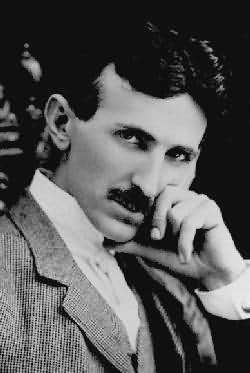

Die Kombination von hoher Kreativität, unvergleichlicher Erfahrung und umfassenden Fähigkeiten macht das Bitchilla Team zu einem der Besten weltweit. Zusammen arbeiten wir daran ihre Wünsche Wirklichkeit werden zu lassen.
Mari Aceña
Chief Executive Officer (CEO)
Maria ist 20 Jahre alt und kommt aus Guatemala. Zurzeit studiert sie an der TU Ilmenau und macht ihren Bachelor in Angewandte Medien- und Kommunikationswissenschaft. Ihre fundierte Erfahrung in der Entwicklung verschiedener Projekte und ihre innovative Denkweise macht sie zur führenden Kraft in unseren Unternehmen.
Jessica Hempel
Software Entwickler und Gründer
Mit nur 24 Jahren gründet sie zusammen mit Gustavo die Firma. Sie ist Projektleiterin und verbringt ihre Tage damit das Internet zu einem angenehmeren Ort zu machen, indem sie Webseiten entwickelt und verwaltet. Das spiegelt sich auch in ihrem Studium wieder, denn im Moment macht sie ihren Master in Medientechnologie an der TU Ilmenau.

Gustavo Lastra
Senior Frontend Developer und Gründer
Gustavo ist Softwareentwickler und arbeitet seit zwei Jahren mit Jessica zusammen an verschiedenen Projekten. Zusammen habe sie Bitchilla gegründet. Seine Erfahrung und Kreativität trägt im Wesentlichen zum Erfolg des Unternehmens bei. Hier macht er genau wie Jessica seinen Master in Medientechnologie an der TU Ilmenau.

Nikola Tesla
Erfinder, Physiker und Elektroingenieur.
Sein Lebenswerk ist geprägt durch zahlreiche Neuerungen auf dem Gebiet der Elektrotechnik, insbesondere der elektrischen Energietechnik, wie die Entwicklung des heute als Zweiphasenwechselstrom bezeichneten Systems zur elektrischen Energieübertragung. Tesla hat in 26 Ländern 280 Patente erhalten.